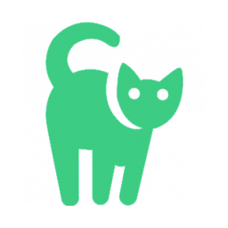
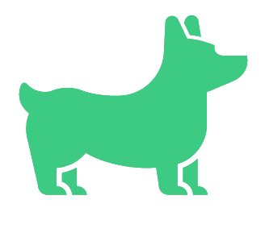

<ion-header>
  <ion-navbar color="gren-2" style="text-align: center;">
    <ion-buttons start>
      <button ion-button icon-only menuToggle>
        <ion-icon name="menu" style="color: white; font-size: 30px"></ion-icon>
      </button>
    </ion-buttons>
    <ion-title style="toolbar-title-md">الحلات</ion-title>
  </ion-navbar>
</ion-header>


<ion-content>
  <ion-list>
    <ion-item-sliding *ngFor="let item of allstatus  | async ">
      <ion-item style="color:#4a4a4a" *ngIf="item.payload.val().approv == true">
        <ion-avatar item-start style="text-align: center;">
          
          
          <ion-icon  *ngIf="item.payload.val().status == 'حيوان اخر'" name="ios-leaf" icon-only style="color:#14cb97;font-size: 32px;text-align: center;"></ion-icon>

        </ion-avatar>
        <h2>{{item.payload.val().name}} <span style="color:#03b898">||</span> {{item.payload.val().zone}}</h2>
        <p style="padding: 0px 0px 3px 0px;"><strong>{{item.payload.val().status}} </strong> بحاجة الى مساعدة</p>
        <ion-note item-end>
          <button class="mybu" ion-button icon-start (click)="goto(item.key)">
            <ion-icon name="md-aperture"></ion-icon>
            المزيد
          </button>
        </ion-note>
      </ion-item>


      
    </ion-item-sliding>
  </ion-list>
  <ion-list>
    
  </ion-list>


  


</ion-content>